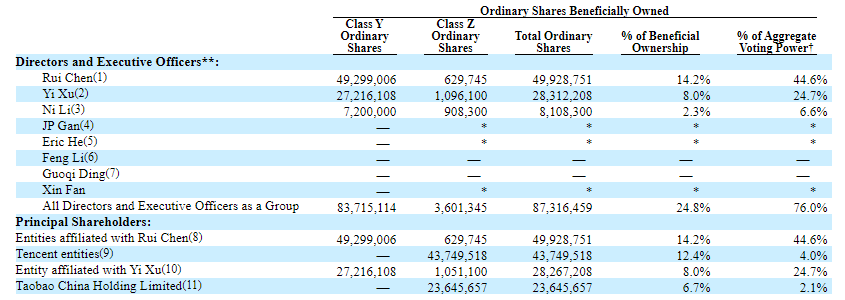
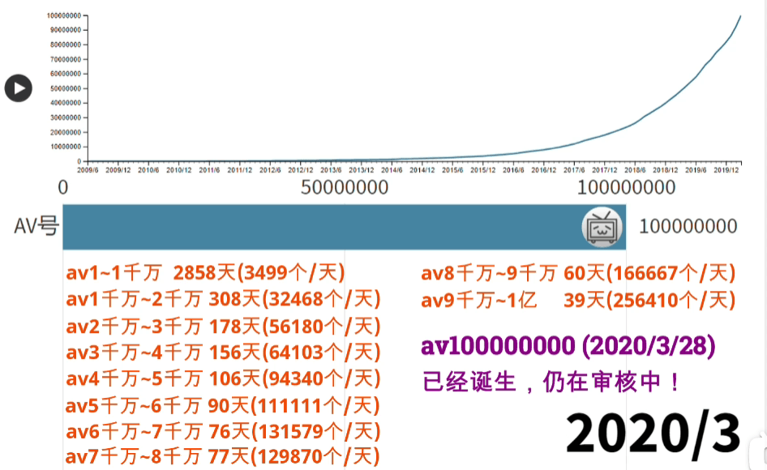

如何理解 B 站 AV 号规则升级为 BV 号这件事？
如何理解自 2020 年 3 月 23 日起，B 站视频的 AV 号将全面升级为 BV 号这件事？
认识一下 B 站
根据B 站 2020 年末提交给美国证券交易委员会（SEC）的FORM 20-F 年度报告（2020 年度报告，关键词 Ordinary Shares Beneficially Owned）股权结构上看：
- 陈睿（董事长/CEO）持股 14.2%，拥有 44.6% 的投票权；
- 徐逸（创始人/总裁）持股 8%，拥有 24.7% 的投票权；
- 腾讯持股 12.4%，阿里持股 6.7%；

一、AV 号与 BV 号有何不同？
个人认为 AV 号和 BV 号的区别可以从以下两方面看：
- 直观规律：原来的 AV 号是纯数字的稿件序列号（具备连续性），当前的 BV 号是一段由数字和大小写字母组成的近似字符串（从直观上看不具备连续性）；
- 最大值：原来的 AV 号是 8 位数，最大数值为 99999999（一个亿），当前的 BV 号长度已经为 10 位，最大数值为（ 58 的 10 次方 = 4.3080420689941e+17 ）；
那么，这两个差异意味着什么？
二、AV 号与 BV 号的差异意味着什么？
根据 B 站 AV 号全面升级至 BV 号公告 给出的说法，是为了为了保护稿件信息安全，容纳更多投稿。
2.1、保护稿件信息安全
原先的 AV 号是稿件的序列号，是一串具备连续性的数字，每个稿件根据投稿时间的先后顺序分配一个唯一的 AV 号，也就是说，越晚投稿的视频，分配到的 AV 号数值越大。那么通过爬虫可以非常轻松的从 AV 号的起始位置 1 开始逐个爬取 B 站的视频，这样 B 站的核心数据（稿件）也就相当于对全网开放下载了。
Robots 协议对大公司可能还有些许威慑力，对于一些不明个人或营销号来说基本是没啥用的。
所以防止大量其他网站利用 AV 号的连续性，使用爬虫盗取 B 站核心数据（稿件），新的规则（ BV 号）是无序且随机的，这就是 B 站声明中的 “保护稿件信息安全”。
2.2、容纳更多投稿
原来的 AV 号是 8 位数，最大数值为 99999999（一个亿），假设以 100 万个 UP 主按每 3 天 1 个稿件数量来计算，平均每个 UP 主累计投稿数量只要 100 个，1 亿的 AV 号连一年都不够用。
改成 BV 号后最大数值为（ 58 的 10 次方 = 4.3080420689941e+17 ），为啥是这个数值呢？58 是因为 Base58 编码，10 次方是因为 BV 号的长度有 10 位。
所以从 AV 号过渡到 BV 号，的确可以容纳更多的稿件。
另外，短视频时代的到来，使得 B 站也在谋划短视频领域，甚至专门开了一个分区叫 VLOG。可以预见的是，站内的短视频稿件越来越多，有的 VLOG UP 主一天投稿 30 个，还有拿 B 站当 VLOG 网络存储用的。
下面是 09 年到 19 年 B 站的稿件数量变化图，十年过去了， UP 主越来越多，制作视频的工具也在不断进步，十年前的生产力与如今相比是不可同日而语的。

以上 2 点是可以根据 AV 号与 BV 号的差异推测而来的直接因素，也是 B 站的官方口径。然而我在评论区看到了一些其他说法，不一定真实，但可以给你提供一个新的视角和思路。
2.3、阻止第三方对 B 站的数据分析
因为 AV 号是随时间递增的，所以通过 AV 号我们可以得知当前 B 站的总稿件数量，也可以轻松推断出日均新增稿件数量。也就是说由于 AV 号的连续性使得我们可以轻易地推算出 B 站的核心数据模型，对数据进行精准分析。对于 B 站来说，这也许不是他们希望看到的。
2.4、AV 号并没有弃用（已证实并亲测）
B 站官方的声明中称：“自 2020 年 3 月 23 日起，AV号将全面升级为BV号。”，但目前根据我搜集到的数据显示，AV 号并没有弃用。
以半佛当前最新一期的视频为例：
- BV 号链接：https://www.bilibili.com/video/BV1C3411r79b
- AV 号链接：https://www.bilibili.com/video/av419667559
这两个链接可以跳转到同一个视频，而并没有显示视频不存在或 404 之类的错误提示。这意味着，实际上 AV 号仍然在新稿件上沿用。
但似乎 1 亿后的 AV 号不再连续，似乎是开始随机抽取的，当然，也有可能是我没有发现其规则。
根据知乎大神与评论区的解析，有人做了一个在线 BV 号转 AV 号的在线转换工具：https://b.gqxqd.cn/bv2av/
目前新的 BV 号转出来的 AV 号已经不是连续的了，即 AV 号的生成已经换了新的方案。B 站从 AV 号升级到 BV 号后，旧的 AV 号是保留的，所以依然不影响爬取早期数据。那么为什么不让 8 位 AV 号之后的新 AV 号不再是连续的呢？多加几位数也是可以用下去的，如果 AV 号是 int 型存储的话应该还能存很久，毕竟能到2147483647 呢，再不行就用 bigint 呗…
关于这点，我也不明白 B 站在想什么。
2.5、破圈成长与去 ACG 化
其实说去 ACG 化有点言过其实，但在 B 站破圈成长的过程中，一定会踊跃出新的内容，相比之下 ACG 内容和 ACG 爱好者就要做出相应的妥协，让出相应的流量，修改规则去适应大众。B 站的用户群体也从早已从喜欢二次元的青少年，变成了面向全民。
对于 AV 号，我估计肯定会有不少小伙伴会有 “AV+数字和字母=番号” 这一第一印象…
另外，从 B 站 APP 的启动页也能看出一些端倪，原来 2233 娘干杯小电视不过是个发卡，后来酒没了，最后人没了，独留个小电视在憨笑（ B 站手机客户端 2015-2020 启动页面变化 ）。
其实 B 站最早是借鉴 niconico 的 SM 号（ smile video ）的命名方式搞了 AV 号（ acg video ），两个都是恶趣味，且都说自己不是那个意思。
bilibili 小电视也是模仿的 niconico 小电视，把 AV 号换掉也姑且能算做是摆脱恶趣味了。
2.6、减轻内容风控给用户带来的负面情绪
内容风控对于任何一个 UGC 产品来说都是绕不开的话题，内容风控主要 “控” 啥？
- 政策层面的内容合规，要符合监管的要求；
- 社区氛围的良性导向，如谩骂、隐私等；
- 社区用户安全的保证，遏制黑灰产等；
从连续的 AV 号过渡到近似无序字符串的 BV 号，删除视频也变得隐秘了几分，B 站也许也希望在内容风控的基础上，尽量减少用户的抵触情绪。
2.7、技术原因
有可能是因为 MySQL 大表做自增 id 不利于分表和分布式，这点就不展开了。
三、 BV 号规则与 Base58 / 64 编码
3.1、BV 号的规则
根据知乎大神与评论区的解析，BV 号的规律大概就是 AV 号异或某个随便选择的数，再随便加一个数，最后再转化成 58 进制（Base58），其数位顺序是打乱的，其索引代表 0～57 的 字母 / 数字 也是乱序的。
既然提到了 Base58 ，也顺便提一下讲 Base64 吧。
3.2、Base58 编码
总计 58 个字符，相比 Base64，Base58 不使用数字 “0”，字母大写 “O”，字母大写 “I”，和字母小写 “l”，以及 “+” 和 “/” 符号。
Base58 是用于 Bitcoin 中使用的一种独特的编码方式，主要用于产生 Bitcoin 的钱包地址。
Base58 编码的字符范围：
123456789abcdefghijkmnopqrstuvwxyzABCDEFGHJKLMNPQRSTUVWXYZ
3.3、Base64 编码
64 个字符：英文大小写 26 * 2 = 52 个，阿拉伯数字 0 ~ 9 = 10 个，特殊字符 + / 两个，总计 64 个。
Base64 编码的字符范围：
ABCDEFGHIJKLMNOPQRSTUVWXYZabcdefghijklmnopqrstuvwxyz0123456789+/